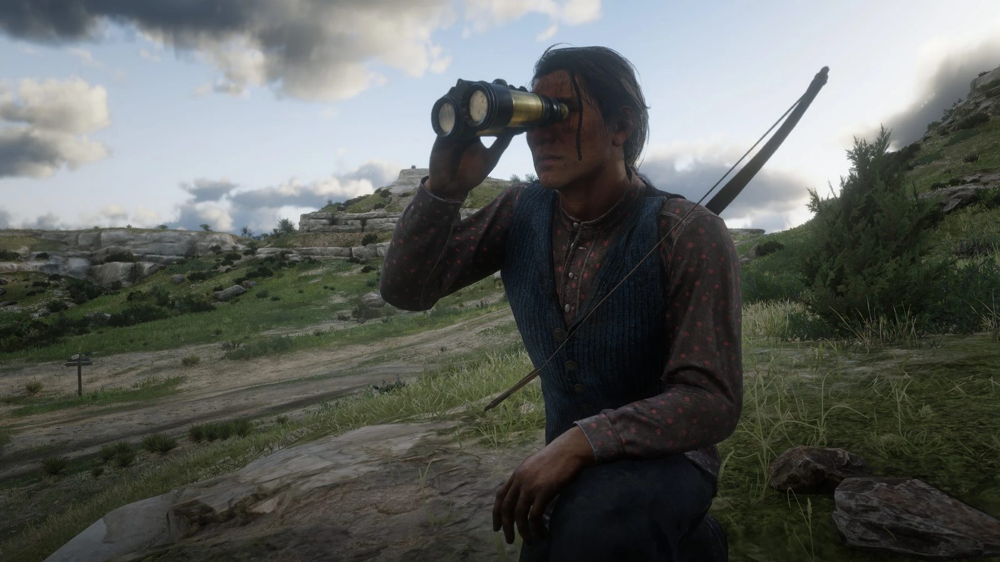
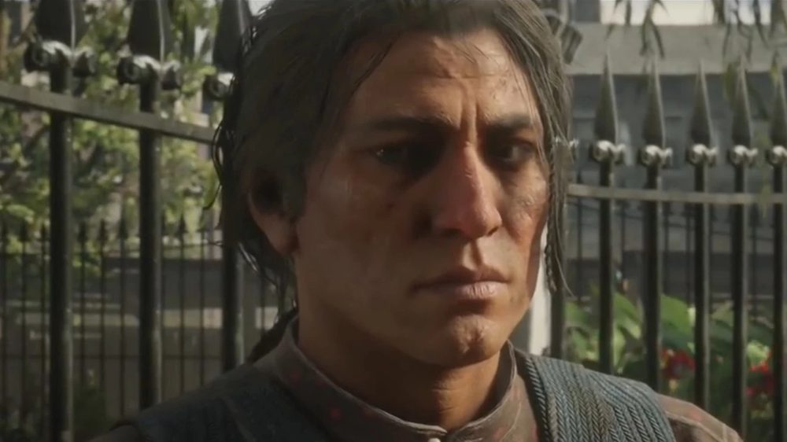
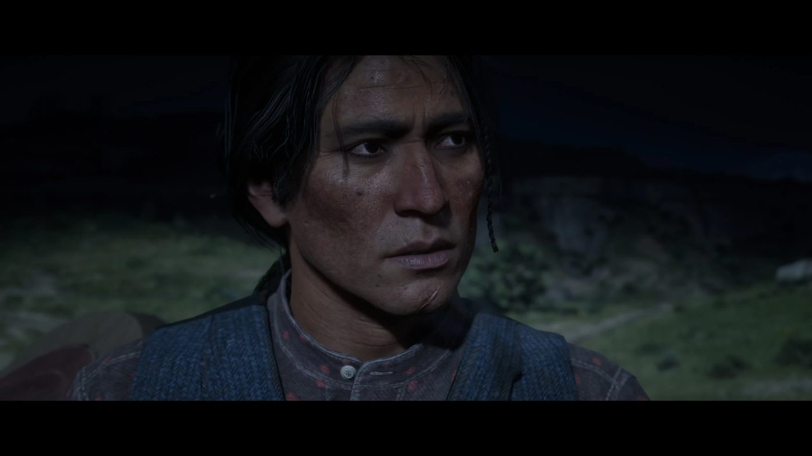

Character · Wapiti
Eagle Flies
Eagle Flies is the son of Rains Fall, chief of the Wapiti, in Red Dead Redemption 2. His elder brother and his mother were killed by US soldiers before the game begins.
Unlike his father, he wants to fight the Army that is pushing his people off their land.
- Nation
- Wapiti
- Father
- Rains Fall
- Home
- Wapiti Indian Reservation, Grizzlies East
- Status
- Killed in 1899
- Games
- Red Dead Redemption 2
Biography
Chapter 4: Cornwall's refinery
Eagle Flies meets Arthur with his father outside the Saint Denis courthouse, in "American Fathers I". In "American Fathers II", the two men target Cornwall Kerosene & Tar, the refinery of Leviticus Cornwall at the Heartland Oil Fields.
Arthur gets inside hidden in a wagon and takes documents from the foreman, Danbury. Eagle Flies blows up an oil well to cover him. They fight their way out together, and Eagle Flies pays Arthur.
Chapter 6: the raids
In "A Rage Unleashed", he comes to the gang's camp at Beaver Hollow to ask for help recovering the tribe's horses, confiscated by the Army. Dutch agrees. With Arthur, Charles and his companion Paytah, they board an Army boat. Dutch crashes it, and the horses swim back to shore.
In "Favored Sons", Eagle Flies and Dutch set a dynamite trap for an Army patrol. Reinforcements arrive. Eagle Flies goes back for the wounded Paytah and is captured. He is held at Fort Wallace. In "The King's Son", Arthur and Charles break into the fort at night and free him.
Death
In "My Last Boy", Eagle Flies rides into Beaver Hollow in war paint and asks the gang to join an attack on the Army at the Heartland Oil Fields. His father begs him not to go. He answers that his father's words mean nothing.
During the battle, a burst steam pipe stuns Arthur, and Dutch leaves him behind. Eagle Flies kills the soldiers about to shoot Arthur. Colonel Henry Favours then shoots Eagle Flies in the stomach, and Arthur kills Favours.
Arthur, Charles and Paytah carry Eagle Flies back to the reservation, where he dies in Rains Fall's arms in 1899. His death is part of the main story and does not depend on the player's choices. His grave, west of Donner Falls, can be visited in the epilogue.
Relationships
Rains Fall
His father, whose pacifism he rejects.

Arthur Morgan
Fights beside him from the refinery raid to the oil fields.

Charles Smith
Frees him from Fort Wallace with Arthur.

Dutch van der Linde
Joins his raids to keep the Army busy away from the gang.
Behind the scenes
Eagle Flies is played by Jeremiah Bitsui, a Navajo actor also of Omaha descent, known for playing Victor in Breaking Bad.
Gallery
